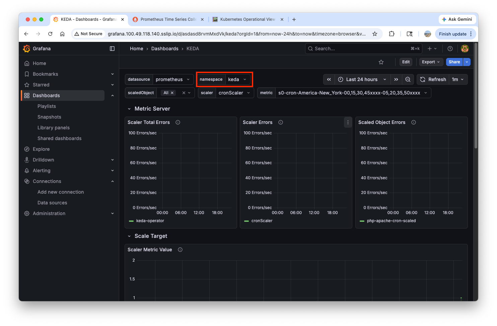
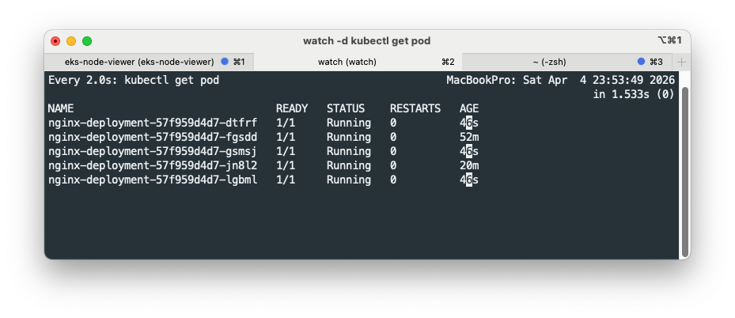
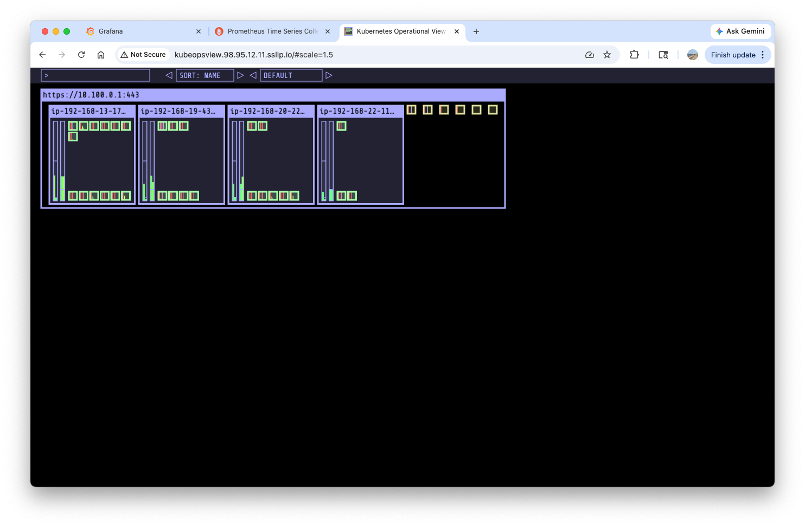

Auto Scalers
1. Horizontal Pod Autoscaler
Import dashboard
First, import the Horizontal Pod Autoscaler (HPA) dashboard. In the grafana main UI, go to Dashboards > New > Import, type 22128 and click Load button.
{kind=link}
In the next page, choose prometheus and click Import button.
{kind=link}
Since we haven't added any HPA policies, No data will appear on the dashboard:
{kind=link}
Deploy a sample application
cpu requests and limits are applied in the hpa-example image.
apiVersion: apps/v1
kind: Deployment
metadata:
name: php-apache
spec:
selector:
matchLabels:
run: php-apache
template:
metadata:
labels:
run: php-apache
spec:
containers:
- name: php-apache
image: registry.k8s.io/hpa-example
ports:
- containerPort: 80
resources:
limits:
cpu: 500m
requests:
cpu: 200m
---
apiVersion: v1
kind: Service
metadata:
name: php-apache
labels:
run: php-apache
spec:
ports:
- port: 80
selector:
run: php-apache
In Dockerfile of the hpa-example image, it essentially contains 1,000,000 summation logic to generate load on the CPU.
Open two separate terminals and run the following commands on each terminal:
watch -d \
'kubectl get hpa,pod;echo;kubectl top pod;echo;kubectl top node' # (1)!
kubectl exec -it deploy/php-apache -- top # (2)!
{kind=link}
{kind=link}
Deploy a client pod and make load
cat <<EOF | kubectl apply -f -
apiVersion: v1
kind: Pod
metadata:
name: curl
spec:
containers:
- name: curl
image: curlimages/curl:latest
command: ["sleep", "3600"]
restartPolicy: Never
EOF
kubectl exec curl -- sh -c 'while true; do curl -s php-apache; sleep 0.01; done'
Making load on the app constantly increases cpu/mem usages:
{kind=link}
Create HPA policy
cat <<EOF | kubectl apply -f -
apiVersion: autoscaling/v2
kind: HorizontalPodAutoscaler
metadata:
name: php-apache
spec:
scaleTargetRef:
apiVersion: apps/v1
kind: Deployment
name: php-apache
minReplicas: 1
maxReplicas: 10
metrics:
- type: Resource
resource:
name: cpu
target:
averageUtilization: 50
type: Utilization
EOF
- 2.
Monitor HPA
With the load increased, the number of pods increases to process the increased load in the grafana dashboard:
{kind=link}
Query HPA metrics in prometheus:
kube_horizontalpodautoscaler_status_current_replicas # (1)!
kube_horizontalpodautoscaler_status_desired_replicas
kube_horizontalpodautoscaler_status_target_metric
kube_horizontalpodautoscaler_status_condition
kube_horizontalpodautoscaler_spec_target_metric
kube_horizontalpodautoscaler_spec_min_replicas
kube_horizontalpodautoscaler_spec_max_replicas
{kind=link}
kubectl exec -it curl -- curl -s kube-prometheus-stack-kube-state-metrics.monitoring.svc:8080/metrics
kubectl exec -it curl -- curl -s kube-prometheus-stack-kube-state-metrics.monitoring.svc:8080/metrics \
| grep -i horizontalpodautoscaler | grep HELP # (1)!
-
# HELP kube_horizontalpodautoscaler_info Information about this autoscaler. # HELP kube_horizontalpodautoscaler_metadata_generation [STABLE] The generation observed by the HorizontalPodAutoscaler controller. # HELP kube_horizontalpodautoscaler_spec_max_replicas [STABLE] Upper limit for the number of pods that can be set by the autoscaler; cannot be smaller than MinReplicas. # HELP kube_horizontalpodautoscaler_spec_min_replicas [STABLE] Lower limit for the number of pods that can be set by the autoscaler, default 1. # HELP kube_horizontalpodautoscaler_spec_target_metric The metric specifications used by this autoscaler when calculating the desired replica count. # HELP kube_horizontalpodautoscaler_status_target_metric The current metric status used by this autoscaler when calculating the desired replica count. # HELP kube_horizontalpodautoscaler_status_current_replicas [STABLE] Current number of replicas of pods managed by this autoscaler. # HELP kube_horizontalpodautoscaler_status_desired_replicas [STABLE] Desired number of replicas of pods managed by this autoscaler. # HELP kube_horizontalpodautoscaler_annotations Kubernetes annotations converted to Prometheus labels. # HELP kube_horizontalpodautoscaler_labels [STABLE] Kubernetes labels converted to Prometheus labels. # HELP kube_horizontalpodautoscaler_status_condition [STABLE] The condition of this autoscaler. # HELP kube_horizontalpodautoscaler_created Unix creation timestamp # HELP kube_horizontalpodautoscaler_deletion_timestamp Unix deletion timestamp
2. Kubernetes Event-Driven Autoscaling(KEDA)
How KEDA works
While the traditional Horizontal Pod Autoscaler (HPA) scales workloads based on resource metrics like CPU and Memory usage, KEDA (Kubernetes Event-Driven Autoscaling) enables scaling based on specific events.
For example, a tool like Apache Airflow can monitor its metadata database to determine the number of tasks currently running or waiting in the queue. By leveraging these event-driven metrics, KEDA can scale workers more proactively and rapidly during sudden spikes in task volume compared to resource-based autoscaling.

https://keda.sh/docs/2.10/concepts/
KEDA performs three key roles within Kubernetes:
- Agent — KEDA activates and deactivates Kubernetes Deployments to scale to and from zero on no events. This is one of the primary roles of the
keda-operatorcontainer that runs when you install KEDA. - Metrics — KEDA acts as a
Kubernetes metrics serverthat exposes rich event data like queue length or stream lag to the Horizontal Pod Autoscaler to drive scale out. It is up to the Deployment to consume the events directly from the source. This preserves rich event integration and enables gestures like completing or abandoning queue messages to work out of the box. The metric serving is the primary role of thekeda-operator-metrics-apiservercontainer that runs when you install KEDA. - Admission Webhooks - Automatically validate resource changes to prevent misconfiguration and enforce best practices by using an
admission controller. As an example, it will prevent multiple ScaledObjects to target the same scale target.
The following specification describes the kafka trigger for an Apache Kafka topic:
triggers:
- type: kafka
metadata:
bootstrapServers: kafka.svc:9092
consumerGroup: my-group
topic: test-topic
lagThreshold: '5' # (1)!
activationLagThreshold: '3' # (2)!
offsetResetPolicy: latest
allowIdleConsumers: false
scaleToZeroOnInvalidOffset: false
excludePersistentLag: false
limitToPartitionsWithLag: false
version: 1.0.0
partitionLimitation: '1,2,10-20,31'
sasl: plaintext
tls: enable
unsafeSsl: 'false'
 Target value for the total lag (sum of all partition lags) to trigger scaling actions. (Default:
Target value for the total lag (sum of all partition lags) to trigger scaling actions. (Default: 10, Optional)- Target value for activating the scaler. (Default:
0, Optional)
Deploy KEDA with Helm
Before deploying KEDA, check metrics API:
Save KEDA variable values in keda-values.yaml:
cat <<EOT > keda-values.yaml
metricsServer:
useHostNetwork: true
prometheus:
metricServer:
enabled: true
port: 9022
portName: metrics
path: /metrics
serviceMonitor:
# Enables ServiceMonitor creation for the Prometheus Operator
enabled: true
operator:
enabled: true
port: 8080
serviceMonitor:
# Enables ServiceMonitor creation for the Prometheus Operator
enabled: true
webhooks:
enabled: true
port: 8020
serviceMonitor:
# Enables ServiceMonitor creation for the Prometheus webhooks
enabled: true
EOT
helm repo add kedacore https://kedacore.github.io/charts
helm repo update
helm install keda kedacore/keda --version 2.16.0 --namespace keda --create-namespace -f keda-values.yaml
kubectl get crd | grep keda
kubectl get all -n keda
kubectl get validatingwebhookconfigurations keda-admission -o yaml
kubectl get podmonitor,servicemonitors -n keda
kubectl get apiservice v1beta1.external.metrics.k8s.io -o yaml
kubectl get pod -n keda -l app=keda-operator-metrics-apiserver # (1)!
kubectl get --raw "/apis/external.metrics.k8s.io/v1beta1" | jq # (2)!
-
cpuandmemorymetrics are pulled from the existingmetrics-server, while external metrics are supplied bykeda-operator-metrics-apiserver(reference).
Deploy an app and ScaledObject
kubectl apply -f https://k8s.io/examples/application/php-apache.yaml -n keda
kubectl get pod -n keda
cat <<EOT > keda-cron.yaml
apiVersion: keda.sh/v1alpha1
kind: ScaledObject
metadata:
name: php-apache-cron-scaled
spec:
minReplicaCount: 0
maxReplicaCount: 2 # Specifies the maximum number of replicas to scale up to (defaults to 100).
pollingInterval: 30 # Specifies how often KEDA should check for scaling events
cooldownPeriod: 300 # Specifies the cool-down period in seconds after a scaling event
scaleTargetRef: # Identifies the Kubernetes deployment or other resource that should be scaled.
apiVersion: apps/v1
kind: Deployment
name: php-apache
triggers: # Defines the specific configuration for your chosen scaler, including any required parameters or settings
- type: cron
metadata:
timezone: America/New_York
start: 00,15,30,45 * * * *
end: 05,20,35,50 * * * *
desiredReplicas: "1"
EOT
kubectl apply -f keda-cron.yaml -n keda
Understand the cron policy in the ScaledObject
- type: cron
metadata:
timezone: America/New_York
start: 00,15,30,45 * * * *
end: 05,20,35,50 * * * *
desiredReplicas: "1"
00, 15, 30, and 45 minutes of every hour, while deleted at 05, 20, 35, and 50 minutes of every hour.
Add KEDA dashboard and monitoring
In the grafana UI, go to Dashboards > New > Import. Copy the json code from https://github.com/kedacore/keda/blob/main/config/grafana/keda-dashboard.json and paste it in the Import via dashboard JSON model box. Click Load button and Import button in the following page.
{kind=link}
Make sure keda is chosen as the target namespace:
{kind=link}
Next, open two terminals and run the following commands on each terminal:
In the dashboard, you can see the pod is up and down periodically:
{kind=link}
Delete resources
3. Cluster Proportional Autoscaler(CPA)
The Cluster Proportional Autoscaler (CPA) is a Kubernetes autoscaler that scales the number of replicas for a workload proportionally to the size of the cluster. Unlike HPA, which scales based on resource metrics like CPU or memory, CPA scales based on the total number of nodes or CPU cores available in the cluster.
This is particularly useful for cluster-level services that must handle increased demand as the infrastructure grows, such as CoreDNS, kube-state-metrics, or other supporting controllers.
graph TD
subgraph Cluster_Size [Cluster Size Metrics]
Nodes[Total Nodes]
Cores[Total CPU Cores]
end
subgraph CPA [Cluster Proportional Autoscaler]
Logic{Scaling Logic}
end
subgraph Workload [Target Workload]
Replicas[Number of Replicas]
end
Nodes --> Logic
Cores --> Logic
Logic -- Proportional Scaling --> ReplicasInstall cluster-proportional-autoscaler and a test app
helm repo add cluster-proportional-autoscaler https://kubernetes-sigs.github.io/cluster-proportional-autoscaler
helm upgrade --install cluster-proportional-autoscaler cluster-proportional-autoscaler/cluster-proportional-autoscaler
cat <<EOT > cpa-nginx.yaml
apiVersion: apps/v1
kind: Deployment
metadata:
name: nginx-deployment
spec:
replicas: 1
selector:
matchLabels:
app: nginx
template:
metadata:
labels:
app: nginx
spec:
containers:
- name: nginx
image: nginx:latest
resources:
limits:
cpu: "100m"
memory: "64Mi"
requests:
cpu: "100m"
memory: "64Mi"
ports:
- containerPort: 80
EOT
kubectl apply -f cpa-nginx.yaml
cat <<EOF > cpa-values.yaml
config:
ladder:
nodesToReplicas:
- [1, 1]
- [2, 2]
- [3, 3]
- [4, 3]
- [5, 5]
options:
namespace: default
target: "deployment/nginx-deployment"
EOF
helm upgrade --install cluster-proportional-autoscaler -f cpa-values.yaml cluster-proportional-autoscaler/cluster-proportional-autoscaler
Add nodes
export ASG_NAME=$(aws autoscaling describe-auto-scaling-groups --query "AutoScalingGroups[? Tags[? (Key=='eks:cluster-name') && Value=='myeks']].AutoScalingGroupName" --output text)
aws autoscaling update-auto-scaling-group --auto-scaling-group-name ${ASG_NAME} --min-size 5 --desired-capacity 5 --max-size 5
aws autoscaling describe-auto-scaling-groups --query "AutoScalingGroups[? Tags[? (Key=='eks:cluster-name') && Value=='myeks']].[AutoScalingGroupName, MinSize, MaxSize,DesiredCapacity]" --output table # (1)!
-
------------------------------------------------------------------------ | DescribeAutoScalingGroups | +-------------------------------------------------------+----+----+----+ | eks-myeks-ng-1-92cea0b2-f793-fc43-14b3-676a74d9e187 | 5 | 5 | 5 | +-------------------------------------------------------+----+----+----+
As the number of nodes has increased, the number of nginx-deployment pods also increases accordingly:
{kind=link}
aws autoscaling update-auto-scaling-group --auto-scaling-group-name ${ASG_NAME} --min-size 4 --desired-capacity 4 --max-size 4
aws autoscaling describe-auto-scaling-groups --query "AutoScalingGroups[? Tags[? (Key=='eks:cluster-name') && Value=='myeks']].[AutoScalingGroupName, MinSize, MaxSize,DesiredCapacity]" --output table # (1)!
-
------------------------------------------------------------------------ | DescribeAutoScalingGroups | +-------------------------------------------------------+----+----+----+ | eks-myeks-ng-1-92cea0b2-f793-fc43-14b3-676a74d9e187 | 4 | 4 | 4 | +-------------------------------------------------------+----+----+----+
4. Cluster Autoscaler(CA/CAS)
The Cluster Autoscaler (CA) is a tool that automatically adjusts the size of a Kubernetes cluster (the number of nodes) based on the presence of pending pods. Unlike HPA or CPA which scale workloads (pods), CA scales the infrastructure itself.
CA works in two directions:
- Scale Up: When there are pods that cannot be scheduled due to insufficient resources, CA adds new nodes to the cluster by interacting with the cloud provider (e.g., AWS Auto Scaling Groups).
- Scale Down: When nodes are consistently underutilized for a certain period and their pods can be moved to other existing nodes, CA removes those nodes to optimize costs.
graph LR
subgraph Kubernetes_Cluster [Kubernetes Cluster]
Pods[Pending Pods]
Scheduler{Scheduler}
Nodes[Nodes]
end
subgraph CA [Cluster Autoscaler]
Monitor{Monitor Pending Pods}
end
subgraph Cloud_Provider [Cloud Provider (AWS)]
ASG[Auto Scaling Group]
EC2[EC2 Instances]
end
Pods -- Cannot Schedule --> Scheduler
Scheduler -- Pending Status --> Monitor
Monitor -- Increase Capacity --> ASG
ASG -- Launch Node --> EC2
EC2 -- Join Cluster --> NodesCurrent autoscaling(ASG) setup
To enable cluster autoscaler, ensure the following tags are attached on each node:
k8s.io/cluster-autoscaler/myeks : ownedk8s.io/cluster-autoscaler/enabled : true
aws ec2 describe-instances --filters Name=tag:Name,Values=myeks-ng-1 --query "Reservations[*].Instances[*].Tags[*]" --output json | jq
You can browse tags on node in the aws console:
{kind=link}
aws autoscaling describe-auto-scaling-groups \
--query "AutoScalingGroups[? Tags[? (Key=='eks:cluster-name') && Value=='myeks']].[AutoScalingGroupName, MinSize, MaxSize,DesiredCapacity]" \
--output table # (1)!
-
------------------------------------------------------------------------ | DescribeAutoScalingGroups | +-------------------------------------------------------+----+----+----+ | eks-myeks-ng-1-92cea0b2-f793-fc43-14b3-676a74d9e187 | 4 | 4 | 4 | +-------------------------------------------------------+----+----+----+
export ASG_NAME=$(aws autoscaling describe-auto-scaling-groups --query "AutoScalingGroups[? Tags[? (Key=='eks:cluster-name') && Value=='myeks']].AutoScalingGroupName" --output text)
aws autoscaling update-auto-scaling-group --auto-scaling-group-name ${ASG_NAME} --min-size 3 --desired-capacity 3 --max-size 6
aws autoscaling describe-auto-scaling-groups \
--query "AutoScalingGroups[? Tags[? (Key=='eks:cluster-name') && Value=='myeks']].[AutoScalingGroupName, MinSize, MaxSize,DesiredCapacity]" \
--output table # (1)!
-
------------------------------------------------------------------------ | DescribeAutoScalingGroups | +-------------------------------------------------------+----+----+----+ | eks-myeks-ng-1-92cea0b2-f793-fc43-14b3-676a74d9e187 | 3 | 6 | 3 | +-------------------------------------------------------+----+----+----+
Deploy the Cluster Autoscaler (CAS)
curl -s -O https://raw.githubusercontent.com/kubernetes/autoscaler/master/cluster-autoscaler/cloudprovider/aws/examples/cluster-autoscaler-autodiscover.yaml # (1)!
sed -i -e "s|<YOUR CLUSTER NAME>|myeks|g" cluster-autoscaler-autodiscover.yaml # (1)!
kubectl apply -f cluster-autoscaler-autodiscover.yaml
- Change the occurance of
<YOUR CLUSTER NAME>tomyeksincluster-autoscaler-autodiscover.yaml
kubectl get pod -n kube-system | grep cluster-autoscaler
kubectl describe deployments.apps -n kube-system cluster-autoscaler
kubectl describe deployments.apps -n kube-system cluster-autoscaler | grep node-group-auto-discovery # (1)!
kubectl -n kube-system annotate deployment.apps/cluster-autoscaler cluster-autoscaler.kubernetes.io/safe-to-evict="false"
Scale nodes by adding pods
cat << EOF > nginx.yaml
apiVersion: apps/v1
kind: Deployment
metadata:
name: nginx-to-scaleout
spec:
replicas: 1
selector:
matchLabels:
app: nginx
template:
metadata:
labels:
service: nginx
app: nginx
spec:
containers:
- image: nginx
name: nginx-to-scaleout
resources:
limits:
cpu: 500m
memory: 512Mi
requests:
cpu: 500m
memory: 512Mi
EOF
kubectl apply -f nginx.yaml
kubectl get deployment/nginx-to-scaleout
kubectl get pods -l app=nginx -o wide --watch
kubectl -n kube-system logs -f deployment/cluster-autoscaler
kubectl get nodes
aws autoscaling describe-auto-scaling-groups \
--query "AutoScalingGroups[? Tags[? (Key=='eks:cluster-name') && Value=='myeks']].[AutoScalingGroupName, MinSize, MaxSize,DesiredCapacity]" \
--output table # (1)!
-
------------------------------------------------------------------------ | DescribeAutoScalingGroups | +-------------------------------------------------------+----+----+----+ | eks-myeks-ng-1-92cea0b2-f793-fc43-14b3-676a74d9e187 | 3 | 6 | 6 | +-------------------------------------------------------+----+----+----+
kube-ops-view and eks-node-viewer confirm the incrased nunber of nodes:
{kind=link}
{kind=link}
Delete resources
Note
Nodes are not scaled down for the first 10 minutes, which can be configured by the --scale-down-delay-after-add=5m flag.
After 10 mins have passed, nodes are scaled down to four.
{kind=link}
aws autoscaling update-auto-scaling-group --auto-scaling-group-name ${ASG_NAME} --min-size 3 --desired-capacity 3 --max-size 3
aws autoscaling describe-auto-scaling-groups --query "AutoScalingGroups[? Tags[? (Key=='eks:cluster-name') && Value=='myeks']].[AutoScalingGroupName, MinSize, MaxSize,DesiredCapacity]" --output table # (1)!
kubectl delete -f cluster-autoscaler-autodiscover.yaml
-
------------------------------------------------------------------------ | DescribeAutoScalingGroups | +-------------------------------------------------------+----+----+----+ | eks-myeks-ng-1-92cea0b2-f793-fc43-14b3-676a74d9e187 | 3 | 3 | 3 | +-------------------------------------------------------+----+----+----+
Problems with CA
While Cluster Autoscaler (CA) is a powerful tool, it has several limitations and challenges:
- Reliance on Cloud Provider (ASG): CA does not directly manage node instances. It relies on Auto Scaling Groups (ASG) to create and delete instances, meaning it doesn't have direct control over the node lifecycle.
- Node vs. Instance Lifecycle: In EKS, deleting a node object from Kubernetes does not automatically terminate the underlying EC2 instance. The ASG must be the one to terminate the instance to ensure the node count is correctly reduced.
- Difficulty in Targeting Specific Nodes: It is very difficult to force CA to scale down a specific node. CA typically scales down underutilized nodes, but ensuring that a specific node (e.g., one that has already been drained) is terminated first is complex.
- Scale-in Policy Limitations: It is challenging to delete a specific node while simultaneously reducing the total node count. Scaling policies are often not flexible enough to handle specific node removal during a scale-in event.
- Example Workaround: In a 100-node cluster, you might need to enable "instance protection" for 99 nodes, migrate pods from the target node, trigger a scale-in by reducing the desired capacity, and then restore protection to all nodes.
- API Rate Limits: CA operates on a polling mechanism. If the polling interval is set too low (checking for scaling opportunities too frequently), it can quickly reach cloud provider API rate limits, leading to throttling and delayed scaling actions.